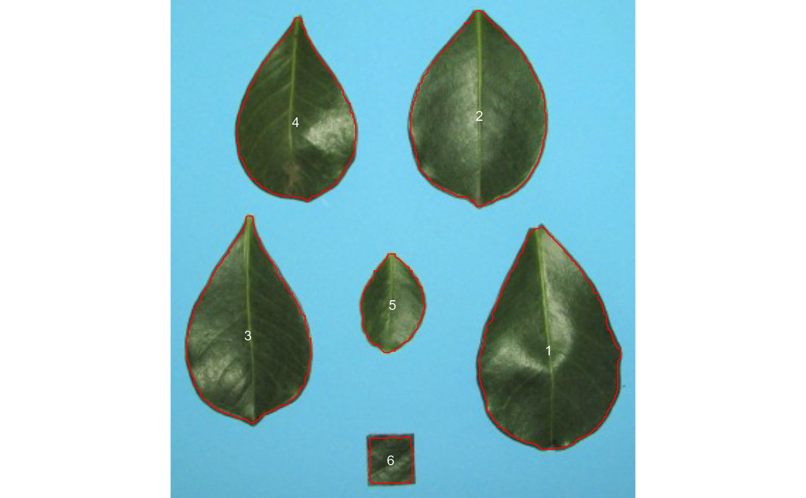
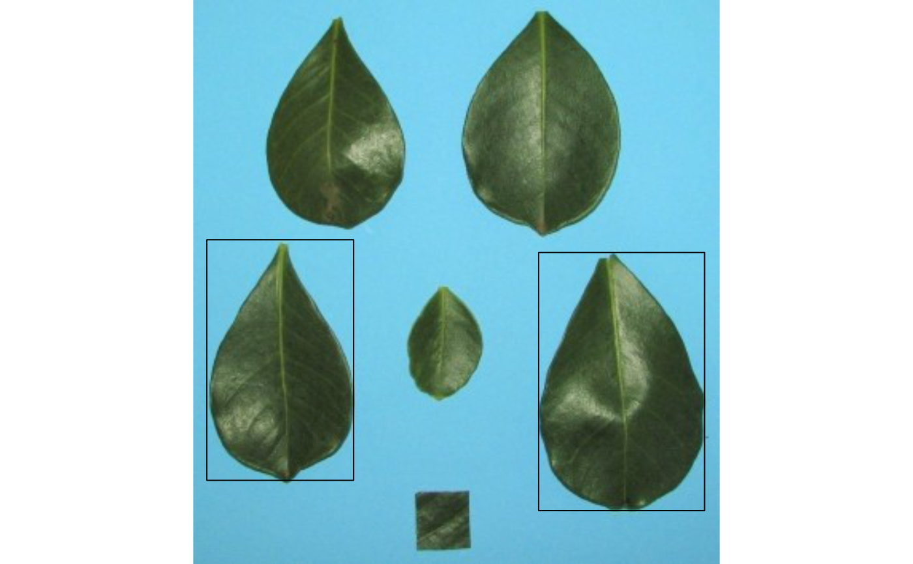
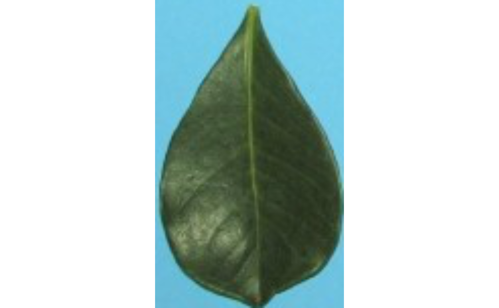

object_id()get the object identification in an image.object_coord()get the object coordinates and (optionally) draw a bounding rectangle around multiple objects in an image.object_contour()returns the coordinates (xandy) for the contours of each object in the image.object_isolate()isolates an object from an image.
Usage
object_coord(
img,
id = NULL,
index = "NB",
watershed = TRUE,
invert = FALSE,
opening = FALSE,
closing = FALSE,
filter = FALSE,
fill_hull = FALSE,
threshold = "Otsu",
edge = 2,
extension = NULL,
tolerance = NULL,
object_size = "medium",
parallel = FALSE,
workers = NULL,
plot = TRUE
)
object_contour(
img,
pattern = NULL,
dir_original = NULL,
center = FALSE,
index = "NB",
invert = FALSE,
opening = FALSE,
closing = FALSE,
filter = FALSE,
fill_hull = FALSE,
threshold = "Otsu",
watershed = TRUE,
extension = NULL,
tolerance = NULL,
object_size = "medium",
parallel = FALSE,
workers = NULL,
plot = TRUE,
verbose = TRUE
)
object_isolate(img, id = NULL, parallel = FALSE, workers = NULL, ...)
object_id(img, parallel = FALSE, workers = NULL, ...)Arguments
- img
An image of class
Imageor a list ofImageobjects.- id
For
object_coord(), a vector (or scalar) of objectidto compute the bounding rectangle. Object ids can be obtained withobject_id(). Setid = "all"to compute the coordinates for all objects in the image. Ifid = NULL(default) a bounding rectangle is drawn including all the objects.For
object_isolate(), a scalar that identifies the object to be extracted.
- index
The index to produce a binary image used to compute bounding rectangle coordinates. See
image_binary()for more details.- watershed
If
TRUE(default) performs watershed-based object detection. This will detect objects even when they are touching one other. IfFALSE, all pixels for each connected set of foreground pixels are set to a unique object. This is faster but is not able to segment touching objects.- invert
Inverts the binary image, if desired. Defaults to
FALSE.- opening, closing, filter
Morphological operations (brush size)
openingperforms an erosion followed by a dilation. This helps to remove small objects while preserving the shape and size of larger objects.closingperforms a dilatation followed by an erosion. This helps to fill small holes while preserving the shape and size of larger objects.filterperforms median filtering in the binary image. Provide a positive integer > 1 to indicate the size of the median filtering. Higher values are more efficient to remove noise in the background but can dramatically impact the perimeter of objects, mainly for irregular perimeters such as leaves with serrated edges.
Hierarchically, the operations are performed as opening > closing > filter. The value declared in each argument will define the brush size.
- fill_hull
Fill holes in the objects? Defaults to
FALSE.- threshold
By default (
threshold = "Otsu"), a threshold value based on Otsu's method is used to reduce the grayscale image to a binary image. If a numeric value is informed, this value will be used as a threshold. Inform any non-numeric value different than "Otsu" to iteratively chosen the threshold based on a raster plot showing pixel intensity of the index.- edge
The number of pixels in the edge of the bounding rectangle. Defaults to
2.- extension, tolerance, object_size
Controls the watershed segmentation of objects in the image. See
analyze_objects()for more details.- parallel
Processes the images asynchronously (in parallel) in separate R sessions running in the background on the same machine. It may speed up the processing time when
imageis a list. The number of sections is set up to 50% of available cores.- workers
A positive numeric scalar or a function specifying the maximum number of parallel processes that can be active at the same time.
- plot
Shows the image with bounding rectangles? Defaults to
TRUE.- pattern
A pattern of file name used to identify images to be imported. For example, if
pattern = "im"all images in the current working directory that the name matches the pattern (e.g., img1.-, image1.-, im2.-) will be imported as a list. Providing any number as pattern (e.g.,pattern = "1") will select images that are named as 1.-, 2.-, and so on. An error will be returned if the pattern matches any file that is not supported (e.g., img1.pdf).- dir_original
The directory containing the original images. Defaults to
NULL, which means that the current working directory will be considered.- center
If
TRUEreturns the object contours centered on the origin.- verbose
If
TRUE(default) a summary is shown in the console.- ...
For
object_isolate(), further arguments passed on toobject_coord().For
object_id(), further arguments passed on toanalyze_objects().
Value
object_id()An image of class"Image"containing the object's identification.object_coord()A list with the coordinates for the bounding rectangles. Ifid = "all"or a numeric vector, a list with a vector of coordinates is returned.object_isolate()An image of class"Image"containing the isolated object.
Examples
if (interactive() && requireNamespace("EBImage")) {
library(pliman)
img <- image_pliman("la_leaves.jpg")
# Get the object's (leaves) identification
object_id(img)
# Get the coordinates and draw a bounding rectangle around leaves 1 and 3
object_coord(img, id = c(1, 3))
# Isolate leaf 3
isolated <- object_isolate(img, id = 3)
plot(isolated)
}


